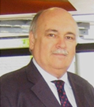
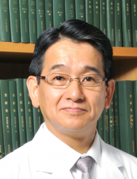
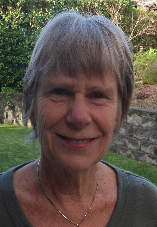
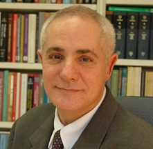
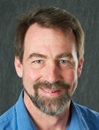

Giovanni E. Mann, Ph.D.
Professor of Vascular Physiology
Cardiovascular Division, King’s British Heart Foundation Centre of Research Excellence
Faculty of Life Sciences & Medicine, King’s College London
150 Stamford Street, London SE1 9NH, U.K.
Tel: +44(0)20-7848-4306
Email: giovanni.mann@kcl.ac.uk
URL: link
Prof Giovanni Mann obtained his BSc in Zoology (1973) from George Washington University, Washington D.C. USA and MSc (1974) and PhD in Physiology (1978) from University College London. He was appointed to a 4-year postdoctoral Research Fellowship at Queen Elizabeth College, London and a Lectureship in Physiology (1981), Readership (1992) and then as Professor of Vascular Physiology at King's College London in 1997. He is currently General Secretary of the Society of Free Radical Research-International and previously served as President of the Society for Free Radical Research-Europe, Chairman/Vice Chairman of The Physiological Society, President of the European Pancreatic Society, President of the European Microcirculation Society, President of the British Microcirculation.
Prof Mann is the Reviews Editor for Free Radical Biology & Medicine and the Chair of the Ethics Committee for Free Radical Biology & Medicine. He serves on Editorial Boards of The Journal of Physiology, Microcirculation and as an Editorial Advisor for the Biochemical Journal. He is currently a member of Heart Research UK Translational Science Panel, Board of External Referees for the Biotechnology & Biological Sciences Research Council and College of Experts for the Medical Research Council - Physiological Systems & Clinical Sciences and was previously Chair of the Translational Sciences Panel for Heart Research UK, Medical Panel of the Henry Smith Charity and a member of grant panels of the British Heart Foundation, Guy's & St. Thomas’ Hospital Charitable Foundation and Royal Society International Networks Panel. He has published >160 research papers and coordinated >36 research symposia at international conferences, including a recent Plenary Symposium entitled ‘Oxygen Matters in Redox Biology’ at joint meeting of the Society for Redox Biology (SfRBM) and Society for Free Radical Research International (SFRRI) in San Francisco, 16-20 November 2016.
Prof Mann’s Vascular Biology research group at King’s College London is investigating signalling cascades involved the transcriptional activation of antioxidant defence genes in endothelial and smooth muscle cells in oxidative stress. His research group are interested in vascular dysfunction induced by oxidative stress in diseases such as atherosclerosis, pre-eclampsia, gestational diabetes and stroke, and the health benefits of dietary inducers of the redox sensitive transcription factor Nrf2 involved the upregulation of endogenous antioxidant defences. More recently, his group are focusing on the importance of adapting human endothelial and smooth muscle cells long-term to ‘physiological’ oxygen concentrations to investigate Nrf2 and nitric oxide signalling in response to inflammatory mediators and/or laminar shear stress.
Shinya Toyokuni
Nagoya University Graduate School of Medicine
Email: toyokuni@med.nagoya-u.ac.jp
Shinya Toyokuni was born in Japan in 1961. He graduated from Kyoto University in 1985 (M.D.), and obtained his Ph.D. (Pathology) in 1991 from Kyoto University Graduate School of Medicine on iron-induced carcinogenesis. After a postdoctoral fellowship in CDRH, FDA in Rockville, MD, he became an Assistant Professor at the Department of Pathology, Kyoto University Graduate School of Medicine.
In 1998, he became an Associate Professor of Pathology, Kyoto University Graduate School of Medicine. In 2008, he moved as a Full Professor at the Department of Pathology and Biological Responses, Nagoya University Graduate School of Medicine. He is teaching pathology to medical students, diagnosing human specimens as a registered pathologist and performing research on the association of oxidative stress and carcinogenesis.
Shinya Toyokuni is the current President of the Society for Free Radical Research International/Asia/Japan. He is a Full Professor at the Department of Pathology and Biological Responses, Nagoya University Graduate School of Medicine, and his research focuses on the role of iron in carcinogenesis for a few decades, and recently on drug developments and ferroptosis as well. He produced monoclonal antibodies against 8-OHdG and HNE-modified proteins in the 1990’s. He has published more than 300 papers in the areas of cancer, oxidative stress, redox biology and pathology, and is an associate editor for Archives of Biochemistry and Biophysics, Cancer Science, Free Radical Biology & Medicine, Free Radical Research, Journal of Clinical Biochemistry and Nutrition, Nagoya Journal of Medical Science and Pathology International. He has obtained Japan Pathology Award in 2015 and SFRR India Lifetime Achievement Award in 2017.
Victor M. Darley-Usmar, Ph.D
Associate Dean for Research
Endowed Professor in Mitochondrial Medicine and Pathology
Tel:(205) 975-9686
Email:vdarleyusmar@uabmc.edu
Victor Darley-Usmar received his Ph.D. at the University of Essex in England and then moved to the University of Oregon as a Post-Doctoral Fellow to pursue his interests in the structure and function of mitochondrial proteins in human disease.After a period as a lecturer in Japan and ten years as a Research Scientist in Burroughs Wellcome in London he joined UAB to establish his own research group in the Department of Pathology in 1995. He has received multiple awards for training and mentoring and served as the Associate Dean for Post-Doctoral Education and the Pathology Graduate Program Director.
He established the UAB Center for Free Radical Biology from 2006-2015 as an international center for research in redox biology. In his current role of Associate Dean for Research he brings his experience in the commercial sector and career development programs to the strategic management of the School of Medicine Research. In his own research program he has been instrumental in defining how redox biology modifies mitochondrial function in pathology and in recognition of these achievements was awarded a Lifetime Achievement Award by the Society for Free Radical Biology and Medicine in 2012. At UAB his contribution to research in mitochondrial pathology was recognized by his appointment as the Foundation Faculty for the “Endowed Professorship in Mitochondrial Medicine and Pathology”. He is now developing a program to apply measures of bioenergetic health to personalized medicine.
He was a recent recipient of the prestigious “Creativity is a Decision” and “Blue Sky” awards from UAB for the Bioenergetic Health Index concept. He has been continuously funded by NIH for 22 years and has published over 300 articles with an H factor of 94.
Dr. Chandan K Sen
473 W 12th Avenue, Columbus, Ohio 43210
Tel: 614-247-7786 / 614-247-7818
Email: sen.16@osu.edu
Url: link
Dr. Chandan K Sen is a tenured John H & Mildred C Lumley Professor of Surgery, Executive Director of The Ohio State University Comprehensive Wound Center and Director of the Ohio State University's Center for Regenerative Medicine & Cell Based Therapies. He is also the Associate Dean for Research at The Ohio State University Wexner Medical Center. Dr. Sen serves as a program director (Innovation & Collaboratory) for The Ohio State University's Center for Clinical and Translational Science. Dr. Sen represents Medicine and Health Sciences at The Ohio State Global Gateway initiative.
After completing his Masters of Science in Human Physiology from the University of Calcutta, Dr. Sen received his PhD in Physiology from the University of Kuopio in Finland. Dr. Sen trained as a postdoctoral fellow at the University of California at Berkeley's Molecular and Cell Biology department. His first faculty appointment was in the Lawrence Berkeley National Laboratory in California. In fall of 2000, Dr. Sen moved to The Ohio State University where established a program on tissue injury and repair. Currently, Dr. Sen is a Professor and Vice Chair of Research of Surgery.
His research program is housed in the Davis Heart and Lung Research Institute where he serves as a Deputy Director and the Director of the Regenerative Medicine Program. Dr. Sen's current research on tissue injury and repair is split into three programs: stroke, post-infarction myocardial remodelling and cutaneous wound healing. He is a PI of several projects including multiple clinical trials. His research has been continuously extramurally funded by prestigious agencies such as five different institutes of the National Institutes of Health, US Department of Defense, US Department of Veteran Affairs and the industry.
Dr. Sen serves on the editorial board of numerous scientific journals. He is the Editor-in-Chief of Antioxidants & Redox Signaling with a current impact factor of 7.4. Dr. Sen and his team have published >300 scientific publications.
Yuji Naito
Kyoto Prefectural University of Medicine
Yuji Naito, M.D., Ph.D., obtained his M.D. degree at the Kyoto Prefectural University of Medicine, Kyoto, Japan in 1983, and performed Ph.D. studies at the same university from 1983–1993. He received the Young Investigator Award of the 6th Biennial Meeting of the Society for Free Radical Research International (SFRRI), Torino, in 1992. He succeeded to serve as secretary general and treasurer of SFRRI Kyoto in 2000. He has served as a secretary general of SFRR Asia and SFRR Japan from 2000, and as a vise president of SFRR Japan from 2011. He is currently an Associate Professor of Department of Molecular Gastroenterology and Hepatology, Kyoto Prefectural University of Medicine, and Chief of Endoscopy and Ultrasound Medicine, University Hospital, where he investigates the role of reactive oxygen and nitrogen species in gastrointestinal inflammatory diseases and carcinogenesis. Recent focus of his research is to determine molecular targets of oxidative stress in gastro-intestinal inflammation. In addition, his group has demonstrated the roles of gaseous molecules, nitric oxide, carbon monoxide, and hydrogen sulfoxide in the pathogenesis of inflammatory bowel diseases.
Francisco R. M. Laurindo
Heart Institute (Incor)
University of São Paulo School of Medicine
Francisco R. M. Laurindo graduated in Medicine by the University of São Paulo School of Medicine, São Paulo, Brazil , in 1978 and completed his residence training in Internal Medicine and Cardiology at the Heart Institute(Incor), University of São Paulo School of Medicine. After a period (1982-84) as associate physician at the same institution, he underwent research training in Physiology and Pharmacology at the Uniformed Services University of the Health Sciences, in Bethesda, Maryland (under Dr. Robert Goldstein, 1984-87). Back to the Heart Institute, University of São Paulo School of Medicine, he started an investigative research track focused on mechanisms of redox signaling processes in the vascular system. He obtained his PhD in 1992, supervised by Dr. Protásio da Luz. Thereafter, he conducted several research projects through independent financial support from research agencies. In 2001, he started, together with Dr. Protásio da Luz, the Vascular Biology Laboratory at the Heart Institute (Incor), University of São Paulo School of Medicine and became its Director in 2008, until presently. His major research interests have focused on understanding mechanisms and regulatory processes underlying the production of oxidant species in vascular cells and tissues and their physiological implications for vessel remodeling in disease. The most important contributions of his group have been the original description of shear stress-dependent generation of superoxide radical from the endothelium, the multi-level characterization of redox response to vascular injury and, particularly, the original discovery that the endoplasmic reticulum chaperone protein disulfide isomerase interacts functionally and physically with oxidant-generating NADPH oxidase complexes. This finding had relevant implications regarding the role of endoplasmic reticulum (patho)physiology on NADPH oxidase function and how redox processes regulate cell migration and vascular remodeling. More recently, Dr. Laurindo's group showed an important role for extracellular PDI in arterial remodeling after injury. Dr. Laurindo has authored or co-authored over 140 publications in peer-reviewed journals, cited >3400 times (h-index=33(ISI)). He supervised 18 PhD students and 17 post-doctoral fellows, in addition to several undergraduate trainees. From 2008-14, he was the vice-coordinator of the National Institute for Science and Technology of Redox Processes in Biomedicine (CNPq/Fapesp) and since 2013 (until present) the Vice-coordinator and principal investigator of Cepid-Fapesp Redoxoma. He is a member of the Brazilian Academy of Sciences since 2012 and a member of its Board of Directors since 2016, a member of Fapesp Study Committee in Health Sciences from 2008-2016 and Fapesp Advisor Committee in Life Sciences since 2016, a member of Capes Federal Agency Committee (Medicine) from 1998-2017. He served as Council Member of the Society for Free Radical Biology and Medicine from 2010-2014 and belongs to the Editorial Board of Free Radical Biology and Medicine since 2008 and of Clinical Science since 2012. He has been an ad-hoc consultant for >30 publications and research agencies from Brazil and abroad. He was elected as vice-chair (2014) and chair (2016) of the Gordon Research Conference on Nox Family NADPH Oxidases.
Cesar G. Fraga
IBIMOL UBA-CONICET, Buenos Aires, Argentina, and Department of Nutrition,
University of California, Davis, USA
Cesar Fraga received his doctoral degree in Chemistry from the University of Buenos Aires in 1985 under the direction of Alberto Boveris. After two postdoctoral stages at the University of California, returned to Argentina in 1990, to establish his group of research. He is currently Full Professor of Physical Chemistry at the School of Pharmacy and Biochemistry, University of Buenos Aires and Researcher at the National Council for Scientific Research (CONICET), Argentina. From 2004 he is associated to the Department of Nutrition, University of California, Davis. He has published more than 150 articles and given talks in more than 100 scientific conferences. He has been Executive Vice-president of the Oxygen Club of California (2007-2016) and Treasurer of the SFRRI (2010-2014). He is Associate Editor of the journal Food and Function, and member of the Editorial Board of Free Radical Biology and Medicine and Redox Biology, among other journals. His research is centered in the biochemical mechanisms supporting the role of bioactive phytochemicals in oxidative stress in cardiovascular, renal and intestinal physiology
Michael J. Davies
Prof. Michael Davies obtained his BSc and DPhil degrees at the University of York, UK. After carrying out post-doctoral studies at Brunel University, London, with Profs. Trevor Slater and Robin Willson, he returned to the University of York as a lecturer in 1987. He moved to The Heart Research Institute, Sydney, Australia in 1996, where he was a group leader and subsequently Deputy Director and finally Director. He returned to Europe in late 2014, to take up a position at the Panum Institute, University of Copenhagen, Denmark, after being awarded a Novo Nordisk Laureate Grant.
He is Editor-in-Chief of the journal Free Radical Research, an Editor of Biochemical Journal and an Associate Editor of Photochemistry and Photobiology. He has previously served as Secretary-General and President of the Society for Free Radical Research – International, as President of the Australasian society, and as Vice-President of the International EPR Society. He is currently President-Elect of Society for Free Radical Research – Europe.
He has been awarded a number of awards and prizes including the Silver medal of the International EPR Society, a Lifetime Lifetime Achievement Award from the Society for Free Radical Research-India, a Distinguished Service Award by the Society for Free Radical Research-Australia, a Distinguished Service Award from the Asia-Pacific EPR Society, and the Archibald Olle Prize of the Royal Australian Chemical Institute.
His research is focused on mechanisms of protein and extracellular matrix modification by reactive species (e.g. radicals, hypochlorous acid, singlet oxygen, peroxides, glycation), the consequence of these processes in cardiovascular disease, and the prevention of damage by novel compounds. He has published over 325 peer-reviewed journal articles, 1 book, 8 edited volumes, 26 book chapters and holds 8 patents.
Regina Brigelius-Flohé, PhD
and the German Institute of Human Nutrition Potsdam-Rehbruecke
Arthur-Scheunert-Allee 114-116
D-14558 Nuthetal
Email: flohe@dife.de
Regina Brigelius-Flohé was born in Munich, Germany. 1978 she received her PhD in Biochemistry in Tübingen and Münster, Germany. During a post-doctoral fellowship in Munich and Düsseldorf together with Helmut Sies she investigated the cellular thiol-disulfide status in perfused organs under various conditions of oxidative stress. The detection and analysis of mixed disulfides of proteins and glutathione provided a basis for the regulation of enzyme activities by thiol modification, a now expanding field. From 1984-1991 she was heading a Molecular Biology Lab in the pharmaceutical industry in Aachen. Apart from constructing high expression vectors for the production of a recombinant human plasminogen activator in E. coli she was supervising PhD students with whom she sequenced the gene for GPx4. 1992-2013 she was tenure professor at the University of Potsdam and heading the Department 'Biochemistry of Micronutrients' at the German Institute of Human Nutrition Potsdam-Rehbrücke (DIfE). Her favourized micronutrients at the DIfE were vitamin E and selenium from both of which the physiological function is not yet sufficiently characterized. Her group was the first to elucidate the metabolism of tocopherols and tocotrienols. Regarding selenium, her major interests are related to redox-regulated processes in inflammation and cancer development influenced by selenium and specific selenoproteins, mainly GPx2 and 4.
She serves on the editorial boards of several journals in the field of nutrition, micronutrients, free radicals, and redox regulation and was President of SFRR-Europe 2005/2006. Currently her list of publication comprises more than 150 papers.
Regina retired in 2013 and apart from enjoying life with her horses she is working as an associated editor for FRBM to keep up-to-date with research news.
Christine Winterbourn

Christine Winterbourn is in the Centre for Free Radical Research, Department of Pathology, University of Otago Christchurch New Zealand. She graduated in chemistry from Auckland University and received her PhD in biochemistry from Massey University, New Zealand. She has had a long term interest in understanding the biological chemistry of free radicals and oxidative stress. Her current interests include the role of thiols in antioxidant defence and redox regulation; the biochemistry and cellular function of peroxiredoxins; reactive oxidant production by neutrophils and the role of myeloperoxidase products in microbial killing and inflammatory disease. Professor Winterbourn has received a number of awards including the Society for Free Radical Research (International) Trevor Slater Award, and is a Fellow of the Society for Redox Biology. She has received the University of Otago Distinguished Research Medal and in 2011 was the first woman recipient of the Rutherford Medal, New Zealand’s highest scientific award.
Enrique Cadenas
Professor
Pharmacology & Pharmaceutical Sciences, School of Pharmacy
University of Southern California, 1985 Zonal Avenue
Los Angeles, CA 90089-9121
Tel: 323 442 1418
Fax: 323 224 7473
E-mail: cadenas@usc.edu
Enrique Cadenas, M.D., Ph.D., graduated in Medicine at the University of Buenos Aires, Argentina and obtained his PhD in Biochemistry at the same institution. He did post-doctoral work at the Johnson Research Foundation, University of Pennsylvania and at the Department of Physiological Chemistry, University of Düsseldorf, Germany. He was associate professor of Pathology at the University of Linköping, Sweden. Currently, Enrique Cadenas is the Charles Krown professor of Pharmacology & Pharmaceutical Sciences at the University of Southern California School of Pharmacy, CA, USA. His laboratory investigates the molecular mechanisms inherent in brain aging and neurodegenerative diseases, with emphasis on Alzheimer’s disease. The research programs attempt to link mitochondrion-centric processes in aging and neurodegeneration to inflammatory responses through redox biology, mainly oxidant-driven cross-talk between metabolism and inflammation.
Daniela Caporossi
 Associate Professor of Applied Biology
Associate Professor of Applied Biology
Department of Movement, Human and Health Sciences
University of Rome “Foro Italico”
Piazza Lauro de Bosis, 15, 00135 Rome, Italy
Tel: +39 06 36733212
Email: daniela.caporossi@uniroma4.it
URL: link
Daniela Caporossi graduated from “La Sapienza” University in Rome, followed by post-doc position in Rome and Hamilton (Canada). She got a faculty position from 1984 in Rome, followed by professorship on 20102 at the “Tor Vergata” University, Faculty of Medicine, and, from 2006, at the “Foro Italico” University, in Rome, where she established a new research group working on exercise biology. She is the Chair of the Unit of Biology and Genetics of Human Movement, Chair of the University Research Committee Board, Chair of the European MS in Health and Physical Activity. She is member of the Society for Free Radical Research - Europe (SFRRE), European college of Sport Science (ECSS), Italian Association of Biology and Genetics (AIBG), Italian Association of Cell Biology and Differentiation (ABCD).
Her main research interests include: a) the role of free radicals in cell signaling and modulation of gene expression in skeletal muscle; b) the role of redox imbalance in muscle-wasting diseases and in tissue adaptation to exercise; c) genetic polymorphisms and adaptation to exercise. At present, she is the national coordinator of the national MIUR PRIN grant ““Exercise Training in Preventing and Counteracting Muscle Wasting: the Role of Redox Homeostasis”, and international coordinator of the EU-EACEA Tempus grant “Sport Professions – Education, Employment, Development in the Balkan Region”.
Maret G. Traber
Linus Pauling Institute
College of Public Health & Human Sciences
Oregon State University
Corvallis, OR 97330
Tel: 541 737 7977
Email: maret.traber@oregonstate.edu
Maret G. Traber received undergraduate (BS) and graduate (PhD) degrees in Nutrition from the University of California, Berkeley, CA. Currently, she is the Ava Helen Pauling Professor in the Linus Pauling Institute and the College of Public Health and Human Sciences at Oregon State University in Corvallis, Oregon, USA.
Maret Traber’s research focuses on vitamin E in human health. She has pioneered methodologies for evaluating vitamin E status in humans using stable isotopes and identified key mechanisms for the regulation of vitamin E bioavailability in humans. Her top cited review articles include those concerning vitamin E metabolism and its antioxidant function. Her laboratory has identified that complete vitamin E depletion in embryonic zebrafish caused by the knock-down of the alpha-tocopherol transfer protein prevents normal brain formation and causes death by 15-24 h. Moreover, severe vitamin E deficiency results in depletion of specific phospholipids containing docosahexaenoic acid and a derangement in lysophospholipids, suggesting dysregulation of membrane repair. Further, these embryos undergo a lethal dysregulation of energy metabolism (e.g. anti-Warburg effect), switching from high to low oxygen consumption with a concomitant depletion of glutathione. This embryonic model shows how vitamin E prevents lipid peroxidation and prevents cell lethality.
She has published over 275 peer-reviewed articles and invited papers/book chapters. Her H-index is 77; according to Google Scholar her work has received more than 21,000 citations. In 2013, she received The Pfizer Consumer Healthcare Nutrition Sciences Award, presented by American Society for Nutrition, and the DSM Nutritional Science Award on Fundamental Research in Human Nutrition.
Helmut Sies
Heinrich-Heine-Universitaet Duesseldorf
Institut fuer Biochemie und Molekularbiologie I
Universitaetsstr. 1, Geb. 22.03
D-40225 Duesseldorf, Germany
Email: sies@uni-duesseldorf.de
Helmut Sies, M.D., Ph.D. (hon), studied Medicine at the Universities of Tübingen, Paris and Munich. He was Full Professor and Chairman at the Institute of Biochemistry and Molecular Biology I at Heinrich-Heine-University Düsseldorf, Germany, where he is now a Research Professor. Member of the German National Academy of Sciences (Leopoldina). He was President of the Society for Free Radical Research International (SFRRI) and of the Oxygen Club of California (OCC).
Research interests include: Oxidative Stress, Hydrogen Peroxide Metabolism, Glutathione, Ebselen, Selenoprotein P, Nutritional Biochemistry.
Malcolm J. Jackson PhD DSc FRCPath
Institute of Ageing and Chronic Disease
University of Liverpool
The William Duncan Building,
6 West Derby St.
Liverpool L7 8TX
Tel: 01517949081
Email: m.j.jackson@liverpool.ac.uk
Malcolm Jackson has a BSc in Biochemistry and a PhD in Physiology from University College, London, was awarded a DSc in 1994 and FRCPath in 1997. He is now Associate Pro-Vice Chancellor for Research and Impact in the Faculty of health and Life Sciences at the University of Liverpool and Director of the MRC-Arthritis Research UK Centre for Integrated Research into Musculoskeletal Ageing (CIMA), which is a joint research centre between the Universities of Liverpool, Newcastle and Sheffield. He was previously Head of the Institute of Ageing and Chronic Disease at the University of Liverpool. Malcolm’s primary research interests are in the roles of reactive oxygen species in cell signaling and degeneration, particularly relating to ageing and skeletal muscle. His research is funded by the MRC, BBSRC, the US National Institute on Ageing and the Wellcome Trust. He has recently been awarded the Ernest F. Adolph Distinguished Lectureship Award by the American Physiological Society (2014), the British Society for Research on Ageing: Lord Cohen Medal for services to Gerontology (2014) and the SFRR International Lifetime Achievement and Service Award (2016).
Dr Aphrodite Vasilaki
Institute of Ageing and Chronic Disease,
6 West Derby Street, L7 8TX,
Liverpool, United Kingdom
Email: vasilaki@liverpool.ac.uk
Dr Aphrodite Vasilaki is a lecturer and previously an independently-funded Research into Ageing Fellow. She graduated with a BSc (Hons) in Molecular Biology from Liverpool John Moores University in 1999 and completed her PhD in the Department of Medicine and School of Biological Sciences at the University of Liverpool in 2003. She has considerable experience of cellular and the sub-cellular analyses of ROS, particularly in muscle and neuronal cells. Aphrodite have particular expertise in both in vitro studies to determine the generation of specific ROS at defined sub-cellular sites in muscle cells and motor neurons during the normal process of myogenesis, including the use of nerve-muscle co-cultures and in vivo studies using genetically modified mice to determine the effects of modification of ROS generation in neurons or muscle on skeletal muscle regeneration and innervation. She has developed expertise in the quantification and assessment of axon-neuromuscular junction (NMJ) structure in ageing muscle. In 2012, she was awarded the prestigious Catherine Pasquier Award by the European Society for Free Radical Research, awarded annually to an outstanding young investigator. Aphrodite is currently the Treasurer of the Society for Free Radical Research-Europe.
Prof. Dr. Tilman Grune
German Institute of Human Nutrition
Potsdam-Rehbruecke
Arthur-Scheunert-Allee 114 - 116
D-14558 Nuthetal
Tel: ++49 (0) 33200/88-2216
Tilman Grune, born 1962, studied 'Medical Biochemistry' in Moscow. After research positions at the Humboldt University Berlin, he was Professor and Head of the Free Radical Laboratory, Research Institute of Environmental Health, Duesseldorf; Head of the Department of Biofunctionality and Safety of Food in the Institute of Biological Chemistry and Nutrition, University of Hohenheim/ Stuttgart; and Head of the Department of Nutritional Toxicology in the Institute of Nutrition, Friedrich Schiller University Jena. Since 2014, he is Scientific Director of the German Institute of Human Nutrition Potsdam-Rehbrücke and Full Professor at the University of Potsdam.
His research interests are oxidative damage and modification of macromolecules in (aging) cells and the effects of nutritional components on these processes, in particular.
(1) The investigation of functional consequences of the formed age-related protein aggregates. The aim is to find out how cells cope with oxidatively damaged and modified proteins or lipids, and how nutrition can positively influence the systems involved in repair and detoxification.
(2) Investigation of the biochemical processes and biological implications of protein nitration which accompany a number of pathological as well as aging processes.
(3) Study of non-enzymatic protein modification.
Barry Halliwell
National University of Singapore
Centre for Life Sciences, #04-19, 28 Medical Drive, Singapore 117456
Tel: 65-6516 6663
Email: uprpac@nus.edu.sg
Url: link
Professor Barry Halliwell is the Senior Advisor to the President at the National University of Singapore (NUS) and Chairman, Biomedical Research Council, Agency for Science, Technology and Research (A*STAR).
Professor Halliwell graduated from the University of Oxford with BA (1st class) and D.Phil degrees. He holds a D.Sc degree from the University of London. He was a faculty member with the University of London, King's College from 1974 to 2000 and held a prestigious Lister Institute Research fellowship. From 1995 to 1999, he was a Visiting Research Professor of Internal Medicine and Biochemistry with the University of California, School of Medicine, Divisions of Cardiology and Pulmonary/Critical Care Medicine. Professor Halliwell was a Visiting Professor of Biochemistry to NUS from 1998 to 2000. He was Head of the University's Department of Biochemistry from 2000 to 2007 and was Deputy Director, Office of Life Sciences from 2001 to 2003. From 2003 to September 2008, he was Executive Director of the NUS Graduate School of Integrative Sciences and Engineering. From Mar 2006 to May 2015, he was the Deputy President (Research and Technology) at NUS.
An internationally-acclaimed biochemist, Professor Halliwell is known especially for his seminal work on the role of free radicals and antioxidants in biological systems. The Thomson Reuters lists Professor Halliwell as one of the world’s most highly-cited researchers in Biology and Biochemistry and his Hirsch Index is 149 (http://www.researcherid.com/rid/C-8318-2009).
His book Free Radicals in Biology and Medicine published by Oxford University Press, and now in its fifth edition, is regarded worldwide as an authoritative text in the field. He was awarded the "Lifetime Achievement Award" by the Society for Free Radical Biology and Medicine in the USA for overall sustained excellence in the field.
His research focuses on the role of free radicals and antioxidants in human disease, particularly Alzheimer's disease and other brain disorders. His interest in identifying the most important antioxidants in the human diet and in developing novel antioxidants has critical bearing on treating human diseases and understanding how diet might cause or prevent them.
Professor Halliwell is a member of several editorial boards including FEBS Letters, Biochemical and Biophysical Research Communications and Antioxidants and Redox Signaling. He has been a lead speaker at Gordon Conferences and other prestigious events worldwide and is a member of several expert advisory panels to leading universities, companies and government agencies.
Fernando Antunes
Fernando Antunes is an Associate Professor at University of Lisbon (Portugal) following post-doctoral research at the University of Southern California (USA) between 1997-2001. He also served as a research fellow at Mount Allison University (Canada), Linköping University (Sweden) and Matsuyama University (Japan). He trained as a biochemist and has a PhD in Theoretical Biochemistry from the University of Lisbon. He has teaching experience in systems biology and metabolic regulation. His research interests lie in the quantitative biology of redox regulation and oxidative stress, and also in the development of a redox therapy program based on the delivery of reactive oxygen species as active pharmaceutical ingredients. He has published over 60 papers that gathered more than 4000 citations (h-index: 28).
Santiago Lamas
Department of Cell Biology and Immunology Associate Editor "REDOX BIOLOGY"
Centro de Biología Molecular "Severo Ochoa" (CSIC-UAM) Nicolás Cabrera 1,campus UAM
28049 Madrid-SPAIN
Tel :+34 911964455
Email: slamas@cbm.csic.es
Santiago Lamas was born in Pontevedra, Spain, in 1958. He graduated in Medicine at the University Autonoma of Madrid and after obtaining his PhD working at the Laboratory of Experimental Nephrology of the Fundación Jiménez Díaz, he worked as a postdoctoral researcher at Brigham & Women's Hospital, Harvard Medical School (1990-1992). The project developed there was the molecular characterization of endothelial nitric oxide synthase.
He became staff member of the Spanish National Research Council in 1993. Currenty, he is Research Professor at the Centro de Biología Molecular “Severo Ochoa” (CBMSO). His group is dedicated to the study of the metabolic and molecular regulation of fibrogenesis with a focus on redox-based responses.
He has been the coordinator of several programme projects in Spain including the CONSOLIDER Program Project “Reactive oxygen species and systems” (2007-2012), the R & D in Biomedicine Program Project FIBROTEAM for the study of Tissue and Organ Fibrosis (2012-2016) and a Network of Excellence for the Research in Free Radicals, (CONSOLREDOX).
He has been Director of CBMSO (2012-2014) and President of the Spanish Group of Research in Free Radicals (GEIRLI) from 2004-2007. He has received more than 9,500 citations in 160 articles. His Personal H-Index is 46. In addition to being Associate Editor of Redox Biology, he is also a member of the editorial board of the journals Free Radical Biology & Medicine, Free Radical Research, and Nitric Oxide. He has been evaluator and assessment expert for the principal Funding Agencies in Spain, Argentina, Israel, United Kingdom and the European Commission. He is currently chair of the study section for Biomedicine in the Spanish Agency for Evaluation and Funding.
Rafael Radi
Rafael Radi was born in Montevideo, Uruguay, in 1963. He graduated in General Medicine (MD) and Biochemistry (PhD) at Universidad de la República, Montevideo, Uruguay. He performed postdoctoral studies under the mentorship of Bruce A. Freeman and Joseph S. Beckman at the University of Alabama at Birmingham, USA. In 1992, he returned to the Department of Biochemistry, Facultad de Medicina, Universidad de la República, Montevideo, Uruguay as Assistant Professor and evolved through all the academic positions to become Professor and Chairman since 2006. He is also the Director of the Center for Free Radical and Biomedical Research at the same University.
Radi’s research work focuses on redox and free radical biochemistry and its medical implications. Among other honors, he is a Foreign Associate of the US National Academy of Sciences, Howard Hughes Medical Institute Alumni and President of the Uruguayan National Academy of Sciences. He obtained the Discovery Award of the Society for Free Radical Biology and Medicine (2011), Alexander Von Humboldt Senior Award (2011) and Premio México de Ciencia y Tecnología (2016). He was President of the Society for Free Radical Biology and Medicine (2007-2008) and he is the current Past President of the Society for Free Radical Research International.
Frederick Domann

Frederick Domann is a professor of radiation oncology in the Free Radical and Radiation Biology Program at the University of Iowa. He is a distinguished alumnus from the University of Wisconsin where he earned his Ph.D in 1991 in human cancer biology under Kelly H. Clifton, studying radiation-induced thyroid and mammary carcinogenesis. He subsequently pursued postdoctoral research at the Arizona Cancer Center with G. Tim Bowden, where he studied the redox biology of gene expression.
He joined the faculty at the University of Iowa in 1993 and has since become an internationally recognized expert in free radical biology, cancer metabolism, and epigenetics. His work has led to more than 155 peer-reviewed publications. Dr. Domann is the President of the Society for Redox Biology & Medicine, and serves on the Council of the Society for Experimental Biology and Medicine where in 2016 he received the Distinguished Scientist Award. He is also the recipient of the mentoring awards from the Radiation Research Society and the Graduate College of the University of Iowa. His research interests include transcriptional regulation, redox metabolism, and epigenetic control mechanisms in human diseases especially cancer.
Jean Cadet
Sherbrooke, Canada
Email:jean.cadet@usherbrooke.ca
Jean Cadet is currently affiliated as Professor at the Department of Radiation Biology, University of Sherbrooke, Sherbrooke, Canada. He was Scientific Adviser during the period 2002-2014 at the French Atomic Energy Commission, CEA/Grenoble after having been the head of the Laboratory of "Lésions des Acides Nucléiques" and CEA/Research Director. His research activities focus on various aspects of the chemistry and biochemistry of oxidatively generated, radiation- and photo-induced damage to DNA (mechanisms of damage formation, measurements in cell and assessment of biological features including DNA repair and mutagenesis). He is author or co-author of over 605 publications consisting of 515 original and review articles to peer-reviewed journals and 90 book chapters. His h-index is 80 with a total of 23,260 citations. He is member of the editorial board of Radiation Research, International Journal of Radiation Biology and Free Radical in Biology and Medicine. Since 2009 he is the Editor-in-Chief of Photochemistry and Photobiology. He has received several awards being recently the recipient of the SFFR-Europe Basic Science Lecture (2014) and Photon award from the American Society of Photobiology (2016).
He joined the faculty at the University of Iowa in 1993 and has since become an internationally recognized expert in free radical biology, cancer metabolism, and epigenetics. His work has led to more than 155 peer-reviewed publications. Dr. Domann is the President of the Society for Redox Biology & Medicine, and serves on the Council of the Society for Experimental Biology and Medicine where in 2016 he received the Distinguished Scientist Award. He is also the recipient of the mentoring awards from the Radiation Research Society and the Graduate College of the University of Iowa. His research interests include transcriptional regulation, redox metabolism, and epigenetic control mechanisms in human diseases especially cancer.
Jean Cadet is currently affiliated as Professor at the Department of Radiation Biology, University of Sherbrooke, Sherbrooke, Canada. He was Scientific Adviser over the period 2002-2014 at the French Atomic Energy Commission, CEA/Grenoble after having been the head of the Laboratory of "Lésions des Acides Nucléiques" and Research Director at CEA. His research activities focus on various aspects of the chemistry and biochemistry of oxidatively generated, radiation- and photo-induced damage to DNA (mechanisms of damage formation, measurements in cell and assessment of biological features including DNA repair and mutagenesis). He is author or co-author of over 605 publications consisting of 515 original and review articles to peer-reviewed journals and 90 book chapters. His h-index is 83 with a total of 22,200 citations. He is member of the editorial board of Radiation Research, International Journal of Radiation Biology and Free Radical in Biology and Medicine. Since 2009 he is the Editor-in-Chief of Photochemistry and Photobiology. He has received several awards including among the most recent ones the SFFR-Europe Basic Science Lecture in 2014 and the Photon award from the American Society of Photobiology in 2016.
Juan Sastre Ph.D.
Department of Physiology, School of Pharmacy, University of Valencia, Avda.
Vicente Andrés Estellés s/n, 46100 Burjasot (Valencia), Spain
Tel: 34-963543815
Fax: 34-963543395
Email: juan.sastre@uv.es
Juan Sastre was born in Valencia, Spain, in 1963. He graduated in Pharmacy at the University of Valencia, and obtained his PhD in 1989 doing a Doctoral Thesis on oxidative stress and aging of the liver supervised by Prof. José Viña and Prof. Federico V. Pallardó. After staying in the Human Nutrition Research Center on Aging at Tufts University (Boston, USA), King's College London (UK), and Unité INSERM 99 at the Hôpital Henri Mondor (France), he returned to the Department of Physiology of the University of Valencia to work first as Assistant Professor and later as Titular Professor. He has teaching experience in Human Physiology from 1987 to date and in Human Pathophysiology from 1998 to date.
Juan Sastre is Full Professor at the University of Valencia since 2006 and his research work focuses on the role of oxidative stress and redox signaling in Gastroenterology, particularly in acute pancreatitis and liver cirrhosis. He has published more than 140 papers on oxidative stress, glutathione, antioxidants, mitochondria, aging, apoptosis, cytokines, protein phosphatases, redox signaling, histone acetylation, acute pancreatitis, and secondary biliary cirrhosis. He has obtained different awards for his research work: “Catherine Pasquier Memorial Award 2005” given by the Society for Free Radical Research (Europe) for his relevant scientific achievements in the area of free radical research; “Harwood Young Investigator Award” for free radical research 1998, given by the Society for Free Radical Research (Europe); and “García Blanco” medal in 1992 given to young researchers in Biomedicine by the School of Medicine of Valencia (Spain).
Nesrin Kartal Ozer
Genetic and Metabolic Diseases Research Center (GEMHAM)
Marmara University
34854, Maltepe, Istanbul, TURKEY
E-mail: nkozer@marmara.edu.tr
Nesrin Kartal Ozer, is Professor at Marmara University, Faculty of Medicine, Department of Biochemistry, Istanbul,Turkey. She graduated with a BSc in Pharmacy from Hacettepe University, Ankara, Turkey and she has received her PhD in Biochemistry in Hacettepe University, Faculty of Medicine. She moved then to Marmara University, Istanbul. She was a Visiting Scientist at St.George’s Hospital, Medical School, Department of Biochemistry, London, UK (1985-1986); Institute of Biochemistry and Molecular Biology, University of Bern, Switzerland (1993-2004) and University of Hohenheim, Stuttgart, Germany (2008). In her research she published ~ 100 articles and she was invited speaker at ~80 international meetings. She was the organizer ~10 scientific meetings and conferences. As member of International Organizations it is worth mentioning her membership in the International Advisory Committee, Oxygen Club of California (1999- today); FEBS Advanced Course Committee Member (2003-2006); Secretary General Society for Free Radical Research-Europe (SFRR-E) and Member of the Council (2003-2009) and President of SFRR-E (2013-2014). In 2006 she was awarded The Oxygen Club of California Award and “Life Time Honorary Member” (2006):“In recognition of outstanding research contributions on the role of vitamin E in atherosclerosis and to fostering the field of free radical biology. Her research focus on endoplasmic reticulum stress, redox signaling and cell death in age related diseases such as atherosclerosis and Alzheimer disease. In parallel she has carried out research on the molecular function of tocopherols in age related diseases.
Paul Witting
Associate Professor Paul Witting is a research academic working in the Discipline of Pathology, The University of Sydney (USyd). Paul completed his PhD in Chemistry in 1994 and then worked as a postdoctoral researcher together with Professor Roland Stocker at the Heart Research Institute (1994-1999). He was awarded a Heart Foundation Travel Fellowship (2000-2002) that funded a second postdoctoral position at the University of British Columbia (Vancouver, Canada). On returning to Australia he relocated with Professor Stocker to the University of New South Wales where he gained a nationally competitive ARC Fellowship (2003-2007) and continued as a senior postdoctoral researcher at the ANZAC Research Institute (Concord Hospital, Sydney).
He joined the Discipline of Pathology at the University of Sydney in 2008 and established the Redox Biology Group where he continues to lead an active group of researchers. The primary research focus for his group is presently linked to understanding pathways for acute tissue insult (including myocardial infarct, stroke, kidney injury and acute colitis) and more broadly vascular biology.
The main goals of the research are to define the underlying mechanisms of acute injury to tissues and design and test specific inhibitors of oxidative damage and inflammation that may be central to the developing pathology.
Paul is the immediate past-President for the Society for Free Radical Researh Australasia (SFRR(A)) and a long-standing member of the SFRR(A) Executive.
Helen Griffiths
Executive Dean
Faculty of Health and Medical Sciences
University of Surrey
Duke of Kent Building, Guildford
Surrey GU2 7XH
Tel: +44 (0) 1483 689586
Helen Griffiths graduated with first class BSc (Hons) degree in Biochemistry from Bath University in 1985. She gained her PhD on “Reactive oxygen species damage in rheumatoid arthritis” from the Faculty of Medicine at Birmingham University (1989).
Helen was appointed as Professor of Biomedical Sciences and Executive Dean of the Faculty of Health and Medical Sciences at the University of Surrey from December 2016. She is a member of the University Executive Board.
Helen has previously been an academic faculty member at Birmingham University, Leicester University and Aston University where she was awarded a personal Chair in Biomedical Sciences in 2005. She founded the Aston Centre for Healthy Ageing in 2009 and was elected as a Fellow of the Royal Society of Biology in 2011.
Helen served as Associate Dean for Research in the School of Life and Health Sciences between 2005 and 2009, was then appointed as Executive Dean of the School of Life and Health Sciences at Aston University from November 2009 to November 2014. She was appointed as Pro-Vice Chancellor International Relations in April 2015.
Helen is an Editor for Redox Biology and Free Radical Research and serves on the Editorial Board of Biogerontology. She is Immediate Past Chair of the British Society for Research on Ageing and Co-Chair of the Development Board, having held the role of BSRA Chair from 2013-16. She has previously served as Secretary on the Executive Board of the Society for Free Radical Research (2008-2012) and was a member of the SFRR-E Council between 2012 and 2016. She chaired a European Task force for Biomarkers of oxidative damage, in the EUROfeda programme funded under framework 6.
Helen’s research has always been carried out in collaboration with clinical and industrial collaborators with the goal to develop new knowledge that has impact for health.She has worked with Unilever for over 10 years and partners with Mologic Ltd and GSK.
Helen has published over 150 peer reviewed papers. She has pursued an increase in understanding of the roles of nutrients in health, inflammatory and degenerative diseases that increase with ageing.
Fabio Virgili
Fabio Virgili graduated in Biology from the University of Rome with first class honours, and completed his Ph.D. on “Cellular and tissue pathology” at the University of Modena and Reggio Emilia, Italy.
He has been visiting scientist at the Rowett Research Institute of Aberdeen (UK), at the Department of Pathology of the University of Modena (Italy), at the Department of Molecular and Cellular Biology of the University of California, Berkeley, and at the “Plant for Human Health Institute” of the North Carolina State University (USA).
He is Senior scientist at the Center for Food and Nutrition Research” of the Council for Agricultural Research and the Analysis of Agronomic Economics (CREA-AN).
He was appointed as Professor of Biochemistry in the Faculty of Sciences of the University of Roma-Tre, in Rome and participates to the board of teachers of different Master and Ph.D. courses held by several Italian Universities.
His research deals with the effect of molecules of nutritional interest on transcriptional control of gene expression and on the effect of the presence of specific genetic variants and epigenetic modification in the risk of degenerative diseases having a nutritional component.
Fabio Virgili has coordinated several research granted by the Italian Ministry of Research, the Italian Ministry for Agricultural and Nutritional Policies and the EU.
He authored more than 90 peer reviewed scientific papers and book chapters and he is Editor-in-chief of the Journal “Genes and Nutrition” (http://genesandnutrition.biomedcentral.com/).
According to his scientific activity, he is included into the “Top Italian Scientists” List (see: http://www.topitalianscientists.org/top_italian_scientists_VIA-Academy.aspx?Cerca=Fabio%20Virgili)
Lester Packer
Lester Packer, PhD, is professor emeritus of Molecular Biology at the University of California Berkeley, adjunct professor of pharmacology and pharmaceutical sciences at the University of Southern California, and distinguished professor at the institute of Nutritional Sciences of the Chinese Academy of Sciences, Shanghai, China. Lester Packer is the recipient of numerous scientific awards including three honorary degrees. Dr. Packer published over 650 scientific papers and edited more than 100 books. Dr. Packer is the series editor of the Oxidative Stress and Disease series published by Taylor & Francis. He served as president-elect and president of the Society for Free Radical Research International. Dr. Packer is the founder and honorary president of the Oxygen Club of California, established in 1994, a non-profit organization dedicated to enhancing education and promoting research in the field of oxidants, antioxidants, nutrition, micronutrients and free radicals in biology and medicine with the goal of promoting human health. Dr. Packer’s research explored mitochondrial bioenergetics and biological oxidations related to molecular, cellular, and physiological role of oxidants and antioxidants and their redox regulation and the Antioxidant Network concept. He has co-organizing conferences sponsored by the Oxygen Club of California in Asia, Europe, and America with a focus on oxygen biology and medicine.
Josiane Cillard
Josiane Cillard presently serves as President of SFRR Europe. She is Emeritus Professor at the University of Rennes 1, France. She has been Professor in Cellular and Molecular Biology at the Faculty of Pharmacy, Rennes. She was graduated as Pharmacist and received her Ph.D in Pharmaceutical Sciences from Rennes University. She is Doctor Honoris Causa of the University of Buenos Aires. She has been President of SFRR-France from 2003 to 2014. She was distinguished by the Oxygen Club of California (OCC) as Life Time Honorary member and received from OCC the Science and Education Award. She organized five International Symposium on « Nutrition, Oxygen Biology & Medicine » in Paris. Her research interests are focused on the modulation of cellular oxidative stress by antioxidants. She mainly studied the prooxidant effect of a tocopherol, the hepatoprotective activity of flavonoids towards iron overload hepatocytes, and the protective role of NO in iron and ethanol toxicity. Presently, Dr Cillard pursues her research on adaptation to oxidative stress by exercise. Dr Josiane Cillard has been decorated by the French Republic as Chevalier de la Légion d’Honneur and Chevalier de l’Ordre National du Mérite.
Frank Kelly
Frank Kelly was born in Belfast, N. Ireland, in 1956. He graduated in Physiology at Queen’s University Belfast, and obtained his PhD in 1982 which focused to the regulation of cellular and tissue protein turnover. After postdoctoral fellowships at Penn State, USA, and at Sussex University, and a lectureship at Southampton, he went to St Thomas’ Hospital, London in 1992 and was then appointed Professor of Respiratory Biochemistry at King’s in 1999 and Professor of Environmental Health from 2001.At King's College London, Frank is Director of the Environmental Research Group, Director of the NIHR Health Protection Research Unit on Environmental Hazards and Deputy Director of the MRC-PHE Centre for Environment & Health. Frank leads a substantial research activity which spans all aspects of air pollution research from toxicology to science policy. He has led studies examining the toxicity of PM associated metals and quinones, diesel and biodiesel exhaust emissions, wood smoke and the identification of biomarkers of traffic exposure. Frank has published over 300 peer-reviewed papers as well as many conference papers and books (as author or editor) on the toxicology and health effects of ozone, nitrogen dioxide and particulate pollution. In addition to his academic work Frank is past President of the European Society for Free Radical Research and past Chairman of the British Association for Lung Research. He has provided policy support to the WHO on air pollution issues and he is Chairman of COMEAP the UK’s Department of Health’s Expert Committee on the Medical Effects of Air Pollutants.
Elias Arnér
Elias Arnér, MD PhD, was appointed Professor in Biochemistry in 2009 and is Head of the Biochemistry Division in the Department of Medical Biochemistry and Biophysics at Karolinska Institutet (KI). He received his PhD (1993) and MD (1997) as a student of an MD PhD program at KI. His PhD thesis was on nucleotide metabolism and nucleoside analogs as therapeutics. He did his first post doc with Prof. Arne Holmgren (Stockholm) on mammalian thioredoxin reductase as a selenoprotein, and his second post doc with August Böck (Munich) on the production of thioredoxin reductase as a recombinant selenoprotein in E. coli. Developing techniques for recombinant selenoprotein synthesis in E. coli and to study structure-function relationships of selenoproteins, especially isoforms of thioredoxin reductase, has since been a main line of research in the Arnér laboratory. Additional interests are to develop biotechnological applications of selenoproteins, to understand redox signaling pathways in mammalian cells, and to develop novel anticancer therapies that target selenoproteins as their mechanism of action. Arnér has published 120+ articles found in PubMed, with 12,500+ citations and an h-index of 46 (Google Scholar). He is also Chair of the Se2017 conference (www.Se2017.se)
Professor Ohara Augusto, PhD
Departamento de Bioquímica
Instituto de Química
Universidade de São Paulo
São Paulo, Brazil
Email:oaugusto@iq.usp.br
Ohara Augusto received her undergraduate (B. S. in Chemistry in 1972) and graduate (Ph. D. in Biochemistry in 1975) titles at the Instituto de Química, Universidade de São Paulo and did postdoctoral work at the University of California Berkeley (1980), and University of California San Francisco (1981-1982), CA, USA. Her research interests have always been focused in the understanding of the multiple roles of free radicals and oxidants in physiology and pathophysiology. Among her contributions to the redox biology filed, it can be mentioned the establishment that carbon-centered radicals can alkylate biomolecules and that the carbonate radical and nitrogen dioxide are relevant bioradicals. While studying production of the carbonate radical by human superoxide dismutase 1 (hSOD1) she showed that attack of the radical on the enzyme produced a novel cross-link, the ditryptophan cross-link. Since then, she has been studying the formation of the ditryptophan cross-link in proteins other than hSOD1 and by oxidants other the carbonate radical. She is also investigating the potential role of this cross-link in protein aggregation diseases. Additionally, she has been interested in the mechanisms of protein thiol oxidation and nitrosation. While working in the redox area, she supervised many students that concluded MS dissertions and PhD Thesis, some of which are already well-recognized scientists, Her prizes include the 2002 Medal for Biology and Medicine of the International EPR Society and the Brazilian Order of Scientific Merit. She is Member of Brazilian Academy of Science, of The World Academy of Sciences (TWAS) and of Academia de Ciências do Estado de São Paulo. She is also Fellow of the Society for Redox Biology and Medicine. Since 2013 she is an Associated Editor of the journal Free Radical Biology and Medicine and Director of the Research, Innovation and Dissemination Center for Redox Processes in Biomedicine.
João Laranjinha
Faculty of Pharmacy, University of Coimbra,
Coimbra, Portugal
Email: laranjin@ci.uc.pt
Tel: 352-239488466
URL: link
Graduation in Pharmaceutical Sciences (University of Coimbra) in 1984 and PhD in Biochemistry (University of Coimbra) in 1996. Postdoc studies with Enrique Cadenas in 1997-1998 at the Dept. Molecular Pharmacology and Toxicology, University Southern California, Los Angeles, USA.
His research is focused on the functional impact of nitric oxide in the brain as a neurometabolic regulator and as a mediator of neurovascular coupling with impact in aging and neurodegeneration. He is also interested in dietary nitrite-driven regulatory processes, encompassing the non-enzymatic production of nitric oxide along the nitrate:nitrite:NO pathway. He has published 80+ papers ISI with 1700+ citations.
He has chaired the organizing and scientific committees of several international conferences, including the European meeting of SFRRE in 2007. He is member of the editorial board of several journals (Free Radical Research, Free Radical Biology and Medicine, Archives of Biochemistry and Biophysics and Redox Biology) and of the Advisory board of Oxygen Club California. He is member of the council of the European Society for Neurochemistry and the European Society for Free Radical Research. He is the current president of Portuguese Biochemical Society.
Graça Soveral, Pharm.D., Ph.D.

Associate Professor, Vice-Dean FFULisboa
Faculty of Pharmacy, University of Lisbon
Av. Prof. Gama Pinto 1649-003 Lisboa, Portugal
Phone +351 217946461
Email: gsoveral@ff.ulisboa.pt
URL: link
Graça Soveral is graduated and PhD in Pharmacy, sub-area Biochemistry, from the University of Lisbon, with the Habilitation degree. She is currently Associate Professor at Faculty of Pharmacy, University of Lisbon, where she coordinates the Clinical Biochemistry, Human Nutrition and Membrane Transport courses for the Master degree in Pharmaceutical Sciences and the Master degree in Biopharmaceutical Sciences.
She presently serves as Vice-Dean of the Faculty of Pharmacy, Vice-President of Portuguese Biochemical Society (SPB) and Treasurer of the Portuguese Biophysical Society (SPBf).
G.Soveral is principal investigator at Institute for Research in Medicines (iMed.ULisboa), where she coordinates the Biological Transport Unit. Her main research area is area is Membrane Transport, with special emphasis on membrane channels in cell physiology and osmoregulation, aquaporin gating and the discovery of aquaporin modulators for diagnostic and therapeutic applications.
Her research interests are focused on (i) understanding of membrane transport phenomena and the mechanisms underlying transporters defects that may lead to disease, (ii) identifying transport systems as targets for drug action, (iii) screening of compounds as modulators (inhibitors/activators) of transporters.
G.Soveral’s research group at iMed.ULisboa is investigating the involvement of aquaporin membrane channels in diseases such as inflammation, obesity and cancer, as well as chemical inhibition by small-molecule compounds that may present drug development opportunities for diagnostic and therapeutic applications.
Neil Hogg
Editor-in-Chief: Nitric Oxide
Neil Hogg received his doctoral degree in Biological Chemistry from the University of Essex, UK, in 1993 under the supervision of Dr Michael T. Wilson and Dr Victor Darley-Usmar. His studied as a post-doc under the supervision of Dr Balaraman Kalyanaraman at the Medical College of Wisconsin, USA. He is currently a Professor in the Department of Biophysics and Associate Dean of Students in the Graduate School of Biomedical Sciences. In 2012 he became editor in Chief of the Journal Nitric Oxide and has been an editorial board member of Free Radicals in Biology and Medicine since 1998. He served as president of the Society for Redox Biology and Medicine from 2014 to 2016 and was made a Fellow of the Society in 2016. His research activity is centered around understanding how the biological chemistry of nitric oxide makes it a unique biological signaling molecule.
Jiri Neuzil
Jiri Neuzil is a professor of molecular medicine at the School of Medical Science, Griffith University in Queensland, Australia, and has an adjunct position with the Institute of Biotechnology, Czech Academy of Sciences, Prague, Czech Republic. After obtaining his PhD in 1987 in Prague, he was a research/senior research fellow in the Heart Research Institute in Sydney, Australia. Before becoming a staff at the Griffith University, he was a junior group leader at the University of Munich, Germany, and a visiting research fellow at the Linkoping University in Sweden.
He is recognized for his contribution to the role of mitochondria in tumour formation and progression and as a target for novel anti-cancer therapies. He discovered mitochondrial complex II as a novel target for cancer therapy and defined mitocans, a group of small molecules with anti-cancer activity that interfere with mitochondrial function. Recently, he discovered horizontal transfer of mitochondria in vivo in the context of cancer. Prof. Neuzil is the President of the Society for Free Radical Research (Australasia). He has published over 180 peer-reviewed original papers, reviews and book chapters.
Lin Mantell
Lin Mantell is a Professor of Pulmonary Toxicology at St. John's University College of Pharmacy and Health Sciences, and adjunct Investigator at Feinstein Institute for Medical Research, North Shore University Hospital, Northwell Health System, and guest professor at New York University Medical Center.
Dr. Mantell received her training from Beijing Medical University, Stony Brook University and Cold Spring Harbor Laboratory. She is serving in the editorial board of journals including American Journal of Respiratory Cell and Molecular Biology, Journal of Inhalation Toxicology, and Journal of Immunotoxicology. Her research focuses on the cellular and molecular mechanisms underlying oxidative stress-induced lung diseases including cystic fibrosis, ventilator-associated pneumonia and air pollution-compromised host defense against pulmonary infections. Studies in her laboratory helped to establish the role of HMGB1 in mediating oxidative lung injury and compromised innate immunity in cystic fibrosis and ventilator-associated pneumonia.
Dr. Mantell is currently the Treasurer of the Society for Free Radical Research International. Since joining the Society for Free Radical Biology and Medicine in 2000, she has served as the Chair/Co-Chair of the following SFRBM Committees: the Committee for Strategic Alliance and Outreach, the Website Committee, the Committee for Free Radical School and currently the Publications Committee. In addition, Dr. Mantell has been a member of other SFRBM committees, including the Scientific Program Committee, SFRBM Council, chaired the Free Radical School and SFRBM symposia, organized the Free Radical School Virtual Seminar series and was the Financial Officer of Women in Science. Moreover, she has lectured at the Sunrise Free Radical School, and has been actively involved in the Society Journals as an author, a reviewer, and a guest editor of a serial review on redox signaling in immune function and cellular responses in lung injury and diseases.
Manuela M. Pereira, PhD
Principal Investigator
ITQB-NOVA
Universidade Nova de Lisboa
Av da Republica (EAN), 2780-159 Oeiras
Tel + 351 214462312
Email: mpereira@itqb.unl.pt
URL: link
Manuela M. Pereira is Principal Investigator and head of the group of Biological Energy Transduction at the New University of Lisbon. She has a Ph in Biochemistry and has been dedicated to explore the molecular mechanisms of key nanomachines, namely those involved in respiration and bioenergetic metabolism. Manuela is author of 70 peer reviewed articles, most as corresponding author. She integrates the Scientific Advisory Board of the Max Planck Institute for Biophysics and included the Executive Committee of the European Biophysics Societies’ Association (2011-15). As President of the Portuguese Biophysical Society (2008-15) she took several initiatives to promote biophysics in Portugal and Portuguese affiliated science abroad. Manuela chaired the European Bioenergetics Conference, EBEC2014.
José Viña
José Viña was born in Valencia, Spain in 1953. After pursuing his studies in Medicine at the University of Valencia, and doing research work under Prof Hans Krebs (Krebs cycle) in Oxford, he obtained his PhD in 1976. Prof Viña taught Physiology at Extremadura University and then returned to Valencia and took up his present position as full Professor of Physiology at the University of Valencia. Here Prof Viña combines his teaching duties with research work, the latter in two main lines, ageing and exercise.
José Viña leads a successful research group working on different aspects of ageing, including healthy ageing, exercise and Alzheimer’s disease. He has published widely (over 300 publications in prestigious international journals) on glutathione, mitochondria, oxidative stress, free radicals and nutrition. Prof Viña has received numerous awards and honours, the most recent of which is the Albert Struyvenberg Medal, awarded by the European Society for Clinical Investigation (ESCI) in 2017. He has also been awarded two Doctor honoris causa, Buenos Aires University (Argentina) and Rennes University (France).
Henry Jay Forman

Professor of Research Gerontology, University of Southern California
Distinguished Professor Emeritus of Biochemistry
University of California, Merced
Editor-in-Chief, Archives of Biochemistry and Biophysics
Phone: (818) 288-1573
Email: peroxideman@gmail.com; Web page: link; Books: link.
Henry Jay Forman was born in New York City in 1947. He graduated in Chemistry from Queens College of the City University of New York, and obtained his Ph.D. in 1971 doing a Doctoral Thesis on enzyme kinetics supervised by Professor Philip Feigelson. After a postdoctoral fellowship with Irwin Fridovich at Duke University, he has held faculty positions at the University of Pennsylvania (Physiology), University of Southern California (Pediatrics, Pathology & Molecular Toxicology) and the University of Alabama, where he was the Chairman of Environmental Health Sciences. He was a Founding Faculty member of the University of California campus at Merced where he participated in establishing both science and general education programs as well as helped start their doctoral programs. In 2015, he returned full-time to the University of Southern California. Dr. Forman is Past President of the Society for Redox Biology and Medicine and is now Editor-in-Chief of Archives of Biochemistry and Biophysics. Previously, he served as Treasurer of the Society for Free Radical Research International and as the Reviews Editor for Free Radical Biology & Medicine. Dr. Forman has mentored over thirty Ph.D. and postdoctoral trainees. Dr. Forman’s research is in oxidative stress and signal transduction. He did pioneering work in mitochondrial superoxide production in which he demonstrated that manganese superoxide dismutase actually pulls the reaction forward, redox signaling in which he first demonstrated signaling by endogenously generated hydrogen peroxide, and mechanisms of induced resistance to oxidative stress in which he demonstrated the induction of glutathione biosynthesis by quinones. His current research focuses on the decline in antioxidant protection in aging that increases susceptibility to inflammation through altered Nrf2 and NF-kB signaling and on oxidative stress in sickle cell disease. He has published over 200 peer-reviewed articles, over 50 book chapters, edited three science books, and authored two mystery novels. In 2016, he presented the Society for Free Radical Research – Europe Award Lecture and was honored with the Society for Redox Biology and Medicine Lifetime Achievement Award.
Giuseppe Poli
Dept. Clinical and Biological Sciences
School of Medicine
University of Torino, Italy
Phone: +39 0116705422
Pippo Poli was born in Torino, Italy, in 1948. He graduated in Medicine in 1973 and obtained specialization diploma in General Pathology at Torino University in 1976 and PhD in Biochemistry at Brunel University of West London, UK, in 1988. He served his home University from 1973 up to 2016. Presently is Emeritus Professor at Torino University. His research interest has consistently focused on the role of oxidative stress and in particular of lipid oxidation products (4-hydroxynonenal, cholesterol oxidation products) in physiology (aging, antiviral defense), pathophysiology (inflammation) and pathology (atherosclerosis, Alzheimer’s disease and carcinogenesis).
Other titles and honors are: honorary degree Doctor Universitatis at the University of Buenos Aires, Argentina, in 1995; Lifetime Achievement Awards by Oxygen Club of California in 2005, by International HNE Club-ISFRR Group of interest in 2010, by SFRR Europe in 2014. Copernicus Medal of the University of Ferrara in 2014, Oxygen Club of California, Health Science Prize and Medal in 2015.
Kelvin J. A. Davies
Kelvin J. A. Davies is the James E. Birren Chair of Gerontology at the USC Davis School of Gerontology. Educated at the University of London, the University of Wisconsin, and the University of California at Berkeley, he was previously a faculty member at Harvard University and Harvard Medical School. Before moving to USC’s Andrus Gerontology Center in 1996, Davies was Chairman of the Department of Biochemistry & Molecular Biology at the Albany Medical College, where he was also Professor of Molecular Medicine. He is the founding Editor-in-Chief of Free Radical Biology & Medicine, and was previously President of the International Society for Free Radical Research. He is a Fellow of the Society for Redox Biology & Medicine, Gerontological Society of America, American Association for the Advancement of Science and winner of the Harwood S. Belding award of the American Physiological Society and Biennial Award from the European Society for Free Radical Research. He has pioneered the study of protein oxidation, proteolysis and altered gene expression during stress-adaptation. He has also uncovered the role of free radicals in mitochondrial adaptation to exercise, and demonstrated the importance of diminished oxidative stress-adaptive gene expression in aging. He is currently focusing his research on the regulation of oxidative stress repair genes during aging.
José J. G. Moura
Professor of Chemistry
Dept. of Chemistry and REQUIMTE
Campus de Caparica, 2829-516 Caparica
Email: jose.moura@fct.unl.pt
Phone: +351 2948382
URL: http://sites.fct.unl.pt/biologicalchemistryatfctunl
http://docentes.fct.unl.pt/jjgm
José J. G. Moura has degree in Chemical Engineering and a Ph.D. in Chemistry, Professor of Chemistry at the Department of Chemistry, Faculdade de Ciências e Tecnologia, Universidade Nova de Lisboa. The main field of research is Bioinorganic Chemistry and the role of Metals in Biology. More than 400 articles indexed in ISI Web of Knowledge and an h-index of 58. For extended periods Research Specialist at UMinnesota (US) and Adjunct Professor at UGeorgia, Athens (US). Past President of Chemistry Department and of Scientific Council at FCT-UNL, Portuguese Delegate to COST and INTAS, a member of Scientific Panel in the Calouste Gulbenkian Foundation and FCT-MCTES, NSF (US) Specialized Panel, and of several scientific editorial boards. In 2006, he was elected Member of Academia das Ciências de Lisboa and in 2010, elected President of the Society of Biological Inorganic Chemistry, for 2 years.
Scientific key words: Bioinorganic, Biophysics, Biocatalysis, Energy Bioconversion (Hydrogen), Role of metals in Biology (heme and non-heme iron, molybdenum, tungsten, nickel, copper, vanadium and cobalt), Inorganic systems as models for biocatalysis, Spectroscopy (NMR, EPR and Mössbauer), (Bio) Electrochemistry, Protein-Protein interactions.
Other interests: Director of FCT NOVA Campus FCT Library and Department of Dicumentation and Culture. Culture/Scientific Interfaces. Multidisciplinary curator activities (Art and Science).
Ana Sofia Fernandes
Professor of Pharmacology and Toxicology
School of Health Sciences and Technologies
Universidade Lusófona de Humanidades e Tecnologias
Lisboa, Portugal
Email: ana.fernandes@ulusofona.pt
Phone: +351 217 515 500 - ext. 627
Ana Fernandes graduated in Pharmaceutical Sciences in 2004 and finished her PhD in Pharmacy (specialty of Toxicology) in 2010. She is an Assistant Professor of Pharmacology and Toxicology at Universidade Lusófona. She is also the coordinator of the Laboratory of Pharmacology and Therapeutics of CBIOS - Research Center for Biosciences & Health Technologies. Ana Fernandes is the Portuguese delegate of the COST actions EU-ROS and NutRedOx. She received four awards, including an Early Research Career Prize, attributed by the Society for Free Radical Research (Europe) in 2010. Her main research interest is to explore the impact of ROS and of redox modulators on cancer etiology and progression.
Anthony Newman
Senior Publisher
Life Sciences Dept.
Elsevier
Amsterdam, The Netherlands
Email: a.newman@elsevier.com
Anthony Newman, is a Senior Publisher with Elsevier, and is based in Amsterdam. Currently responsible for sixteen applied biochemistry and laboratory medicine journals, he joined Elsevier 30 years ago and has been Publisher for the last 17 years. Before then he was the marketing communications manager for the biochemistry journals of Elsevier. By training he is a polymer chemist and was active in industry before leaving London and moving to Amsterdam in 1987 to join Elsevier. Apart from managing these journals he is also active in presenting many publishing skills and outreach programs and workshops worldwide.
Catarina Resende Oliveira
Professor of Biochemistry
Faculty of Medicine, University of Coimbra,
Coimbra, Portugal
Email:catarina.n.oliveira@gmail.com
Tel: 351-239820190
URL: http://www.cnc-ibili.cnc.uc.pt/index.php/research-groups/neuro-7-aging-and-brain-diseases-advanced-diagnosis-and-biomarkers/
Catarina Resende de Oliveira, MD PhD, is Full Professor of Biochemistry at the Faculty of Medicine, University of Coimbra, Consultant of Neurology at the Neurological Clinic, in the Coimbra University Hospital (CHUC), and presently she coordinates the CNC.IBILI research consortium at the University of Coimbra and the “Unidade para a Inovação e Desenvolvimento” (UID) at CHUC.
Her research interests are focused on the cellular and molecular mechanisms of neurodegeneration. She is the leader of the research Group dedicated to Advanced Diagnosis and Biomarkers of Aging and Brain diseases.
Her contributions to science are described in over 300 publications, with an h-index of 62 and more than 12000 citations in international scientific journals including New England Journal of Medicine and Lancet Neurology and JAMA. She has a vast experience in organization and leadership of research and in evaluation of research projects. She has been reviewer for FCT, Welcome Trust, Alzheimer's Association, Parkinson’s UK, Medical Research Council (MRC) and European Research Council (ERC).
She is member of the Health Sciences Scientific Council of the Portuguese Foundation for Science and Technology (FCT) and of the European DANA Alliance for the Brain (EDAB); was sub-director of the Portugal/ Harvard Medical School Programme, as well as member of the direction of Health Cluster Portugal (HCP),
Catarina Oliveira was awarded for her research work: “Estimulo à Excelência”, by FCT, “Nunes Correa Verdades de Faria” prize in Aging, by “Santa Casa da Misericordia de Lisboa”, “Grande Oficial da Ordem da Instrução Pública” by the President of the Portuguese Republic, and the Medal of Distinguished Service, gold category, by the Ministry of Health of Portugal.
Pedro Moradas Ferreira
Instituto de Ciências Biomédicas Abel Salazar e
Instituto de Investigação e Inovação em Saúde (I3S)
Universidade do Porto
Email:pmferrei@ibmc.up.pt
Pedro Moradas Ferreira is at present full professor of biochemistry at the Abel Salazar Biomedical Institute of the University of Porto. After obtaining the degree of Chemistry at the Faculty of Lisbon he worked at the University College London leading to a PhD degree in Biochemistry. After joining the University of Porto, he spends a period at the Free University of Brussels and at the Free University of Amsterdam.
He started a research group at the Institute of Molecular and Cell Biology in Porto, where he focused the research in the oxidative stress response using the yeast S.cerevesiae as a cell model, namely protein oxidation. And more recently is collaborating in the mechanisms of ageing and sphingolipids signaling. He is co-author of more than one hundred international publications. He was a member in the organization of several international conferences and courses. He is currently a reviewer for Free Radical Biology and Medicine as well as other journals. He joined the COST commission in the scientific domain of “Agriculture, Biotechnology and Food Sciences “ where he served as chairman for a period of three years.
He was member of international committee for evaluations of European research grants (Marie-Curie) and for national grants at the FCT as in ad hoc consultant of international organizations.
Leonor Almeida
Full Professor of Biochemistry
Faculty of Pharmacy, University of Coimbra,
Coimbra, Portugal
Email:malmeida@ci.uc.pt
Tel: +351-239488444
L. Almeida is graduated and PhD in Pharmacy, sub-area Biochemistry (University of Coimbra). She is full professor of Biochemistry at the Faculty of Pharmacy, University of Coimbra and principal investigator at the Center for Neuroscience and Cell Biology of this University, in the group “Redox Biology in Health and Disease”. Her main research interests have been concerned with molecular mechanisms underlying health-promoting effects of dietary polyphenols, mainly in context of atherosclerosis prevention. More recently, her research focus has been on anti-inflammatory mechanisms of polyphenols, in particular anthocyanins, against inflammatory bowel disease, either alone or in combination with drugs. She has published over 65 papers ISI (4000 citations, h-hindex: 30).
Ana Ledo
Center for Neuroscience and Cell Biology
University of Coimbra
Coimbra, Portugal
Email:analedo@cnc.uc.pt
Tel: +351 304502907
Ana Ledo graduated in Biochemistry (University of Coimbra) in 2000 and obtained her PhD in 2007 (University of Coimbra) focused on the study of nitric oxide concentration dynamics in the brain and regulation of mitochondrial respiration by endogenous nitric oxide. She is currently a post-doctoral researcher at the Center for Neuroscience and Cell Biology, University of Coimbra. Her research is focused on the study of neurometabolic coupling in vivo, in particular in epilepsy. She is also interested in development of novel tools based on electrochemical micro(bio)sensor for in vivo monitoring of metabolic markers, neurotransmitters and neuromodulators.
Rui Barbosa
Faculty of Pharmacy, University of Coimbra
Coimbra, Portugal
Email: rbarbosa@ff.uc.pt
Tel: +352-239488463
Rui Barbosa graduated in Pharmaceutical Sciences-Industrial Pharmacy at the Faculty of Pharmacy, University of Coimbra in 1986, and obtained his PhD degree in Pharmaceutical Chemistry at same University in 1998. At present, he is Associate Professor teaching Instrumental Analysis courses. He started his research working on potentiometric sensors for ion measurement in biological fluids at Faculty of Pharmacy, University of Oporto from 1987 to 1990. Then, he worked on electrophysiology of pancreatic beta-cells and electrochemical detection in vivo with carbon fiber microelectrodes until 1998. He did studies on the ionic mechanisms underlying insulin secretion by the Islets of Langerhans. Since 2000, he has been working on the development of electrochemical sensors and biosensors for in vivo measurements of neurochemicals at the Redox Biology and Brain Sensing Group of the Center for Neuroscience and Cell Biology, University of Coimbra. His research interests include the design and characterization of enzyme-biosensors based on different microelectrode platforms for real-time and in vivo monitoring of neurotransmitters, neuromodulators, and metabolic markers. He has published more than 60 papers on different research areas.